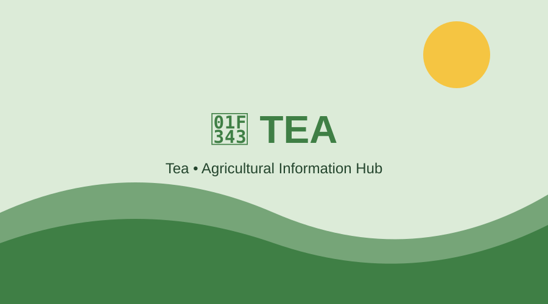

Rice
Varieties: Aman, Aus, Boro and improved varieties.
Soil: Fertile soil with suitable water availability.
Cultivation: Seedbed preparation, transplanting/direct sowing, irrigation and nutrient management.
Harvest: Harvest when grains are mature and sufficiently dry.
Uses: Main food grain; rice products and animal feed.
Nutrition: Mainly carbohydrates with small amounts of protein and micronutrients.

Wheat
Varieties: Select varieties suited to the local climate.
Soil: Well-drained fertile loam is generally suitable.
Cultivation: Prepare soil, sow quality seed, manage nutrients and irrigation.
Harvest: Harvest when plants turn golden and grains are mature.
Uses: Flour, bread, noodles and animal feed.
Nutrition: Provides carbohydrates, protein, fiber and several micronutrients.

Mango
Soil: Well-drained soil with good organic matter.
Cultivation: Use healthy grafted plants and provide suitable spacing.
Harvest: Pick mature fruits carefully to avoid damage.
Uses: Fresh fruit, juice, pickle and desserts.
Nutrition: Provides vitamin C, vitamin A precursors and fiber.

Banana
Soil: Deep, fertile and well-drained soil.
Cultivation: Plant healthy suckers or tissue-culture plants and maintain moisture.
Harvest: Harvest bunches at the appropriate maturity stage.
Uses: Fresh fruit, cooking, chips and processed foods.
Nutrition: Rich in carbohydrates and provides potassium and fiber.

Tomato
Soil: Fertile, well-drained soil.
Cultivation: Raise healthy seedlings and transplant into prepared beds.
Harvest: Harvest fruits according to market and use requirements.
Uses: Salads, cooking, sauces and processing.
Nutrition: Contains vitamin C, potassium and lycopene.

Potato
Soil: Loose, fertile and well-drained soil.
Cultivation: Plant healthy seed tubers, earth up plants and manage irrigation.
Harvest: Harvest after tubers reach suitable maturity.
Uses: Cooking, snacks and processed foods.
Nutrition: Good source of carbohydrates, potassium and vitamin C.

Jute
Soil: Fertile, moisture-retentive soil is suitable.
Cultivation: Prepare fine seedbed, sow quality seed and manage weeds.
Harvest: Harvest at a suitable stage for good fiber quality.
Uses: Bags, ropes, textiles and other natural-fiber products.
Nutrition: Primarily a fiber crop rather than a food crop.

Tea
Soil: Acidic, fertile and well-drained soil with adequate moisture.
Cultivation: Maintain suitable shade, pruning, nutrition and moisture.
Harvest: Regularly pluck suitable young shoots.
Uses: Tea beverages and processed tea products.
Nutrition: Tea contains naturally occurring polyphenols and caffeine.